MENÚ
Tacos
Calle 4
Quesadillas
Especialidades
Healthy

Tortas
Carne a granel
Alambre
Bebidas
Otros
Postres
Tacos al pastor
30 gr de carne cocida marinada con especies del sur
$14.00
Tacos de longaniza
30 gr de carne cocida marinada con especies del sur
$14.00
Taco suadero
30 gr de carne cocida marinada con especies del sur
$17.00
Tacos de bistec
30 gr de carne cocida marinada con especies del sur
$18.00
Taco de top sirloin
30 gr de carne cocida marinada con especies del sur
$20.00
Taco arrachera
30 gr de carne cocida marinada con especies del sur
$23.00
Tacos con queso
Tacos de pastor con queso
Taco de 30 gr. de carne cocida de tu elección y 15 gr. de queso artesanal derretido
$18.00
Tacos de longaniza con queso
Taco de 30 gr. de carne cocida de tu elección y 15 gr. de queso artesanal derretido
$17.00
Tacos de suadero con queso
Taco de 30 gr. de carne cocida de tu elección y 15 gr. de queso artesanal derretido
$20.00
Tacos de bistec con queso
Taco de 30 gr. de carne cocida de tu elección y 15 gr. de queso artesanal derretido
$21.00
Tacos de top sirloin con queso
Taco de 30 gr. de carne cocida de tu elección y 15 gr. de queso artesanal derretido
$23.00
Tacos de arrachera con queso
Taco de 30 gr. de carne cocida de tu elección y 15 gr. de queso artesanal derretido
$28.00
Tacos de harina
Tacos al pastor de harina
45 gr. de carne cocida cortada en lajas en tortilla de harina estilo casero
$18.00
Tacos de longaniza de harina
45 gr. de carne cocida cortada en lajas en tortilla de harina estilo casero
$18.00
Taco suadero de harina
45 gr. de carne cocida cortada en lajas en tortilla de harina estilo casero
$21.00
Tacos de bistec de harina
45 gr. de carne cocida cortada en lajas en tortilla de harina estilo casero
$22.00
Taco de top sirloin de harina
45 gr. de carne cocida cortada en lajas en tortilla de harina estilo casero
$24.00
Taco arrachera de harina
45 gr. de carne cocida cortada en lajas en tortilla de harina estilo casero
$34.00
Taco calle 4 de pastor
Taco de 60 gr de carne cocida de tu elección y 45 gr de queso artesanal derretido
$37.00
Taco calle 4 de longaniza
Taco de 60 gr de carne cocida de tu elección y 45 gr de queso artesanal derretido
$37.00
Taco calle 4 de suadero
Taco de 60 gr de carne cocida de tu elección y 45 gr de queso artesanal derretido
$41.00
Taco calle 4 de bistec
Taco de 60 gr de carne cocida de tu elección y 45 gr de queso artesanal derretido
$43.00
Taco calle 4 de top sirloin
Taco de 60 gr de carne cocida de tu elección y 45 gr de queso artesanal derretido
$45.00
Taco calle 4 de arrachera
Taco de 60 gr de carne cocida de tu elección y 45 gr de queso artesanal derretido
$58.00
Quesadilla de pastor
Tortilla de harina estilo casero con 45 gr. de carne cocida a elegir y 35 gr. de queso artesanal derretido
$28.00
Quesadilla de longaniza
Tortilla de harina estilo casero con 45 gr. de carne cocida a elegir y 35 gr. de queso artesanal derretido
$27.00
Quesadilla de suadero
Tortilla de harina estilo casero con 45 gr. de carne cocida a elegir y 35 gr. de queso artesanal derretido
$33.00
Quesadilla de bistec
Tortilla de harina estilo casero con 45 gr. de carne cocida a elegir y 35 gr. de queso artesanal derretido
$34.00
Quesadilla de top sirloin
Tortilla de harina estilo casero con 45 gr. de carne cocida a elegir y 35 gr. de queso artesanal derretido
$35.00
Quesadilla de arrachera
Tortilla de harina estilo casero con 45 gr. de carne cocida a elegir y 35 gr. de queso artesanal derretido
$45.00
Quesadilla sin carne
Tortilla de harina estilo casero y 35 gr. de queso artesanal derretido
$21.00
Gringas
Gringa de pastor
Tortilla de harina casera con 65 gr. De carne cocida de tu elección y 55 gr. de queso artesanal tipo costra en toping
$43.00
Gringa de longaniza
Tortilla de harina casera con 65 gr. De carne cocida de tu elección y 55 gr. de queso artesanal tipo costra en toping
$41.00
Gringa de suadero
Tortilla de harina casera con 65 gr. De carne cocida de tu elección y 55 gr. de queso artesanal tipo costra en toping
$47.00
Gringa de bistec
Tortilla de harina casera con 65 gr. De carne cocida de tu elección y 55 gr. de queso artesanal tipo costra en toping
$49.00
Gringa de top sirloin
Tortilla de harina casera con 65 gr. De carne cocida de tu elección y 55 gr. de queso artesanal tipo costra en toping
$50.00
Gringa de arrachera
Tortilla de harina estilo casero con 45 gr. de carne cocida a elegir y 35 gr. de queso artesanal derretido
$66.00
Costras
Costra de pastor
Tubo de 80 gr. de queso artesanal dorado por fuera y derretido por dentro, relleno de 65 gr. de carne cocida de tu elección
$50.00
Costra de longaniza
Tubo de 80 gr. de queso artesanal dorado por fuera y derretido por dentro, relleno de 65 gr. de carne cocida de tu elección
$49.00
Costra de suadero
Tubo de 80 gr. de queso artesanal dorado por fuera y derretido por dentro, relleno de 65 gr. de carne cocida de tu elección
$55.00
Costra de bistec
Tubo de 80 gr. de queso artesanal dorado por fuera y derretido por dentro, relleno de 65 gr. de carne cocida de tu elección
$56.00
Costra de top sirloin
Tubo de 80 gr. de queso artesanal dorado por fuera y derretido por dentro, relleno de 65 gr. de carne cocida de tu elección
$60.00
Costra combinada
Tubo de 80 gr. de queso artesanal dorado por fuera y derretido por dentro, relleno de 65 gr. de carne cocida de tu elección
$67.00
Costra de arrachera
Tubo de 80 gr. de queso artesanal dorado por fuera y derretido por dentro, relleno de 65 gr. de carne cocida de tu elección
$77.00
Costra fifí
Tubo de 100 gr. de queso artesanal (o vegano) dorado por fuera y derretido por dentro, relleno de 80 gr. de carne de arrachera y top sirloin, aguacate en topping, espolvoreado con queso de cabra y frutos azules, sobre 3 tortillas azules nixtamalizadas libres de gluten
$137.00
Costra vegana
Tubo de 100 gr. de queso vegano libre de gluten, dorado por fuera y derretido por dentro, relleno de calabazas, champiñones, marinados con receta estilo del sureste, aguacate en topping, todo sobre 3 tortillas azules nixtamalizadas libre de gluten
$60.00
Taco vegano
Espinacas y champiñones asados con el marinado de la casa, en tortillas azules nixtamalizadas sin gluten
$16.00
Sopecitos de pollo al pastor
Sopecitos de maíz nixtamalizada con nopal libre de gluten, frijoles refritos, pollo marinado al pastor, queso (vegano o asadero) piña y aguacate en topping. (Órden de 4)
$65.00
Sopecitos veganos
Sopecitos de maíz nixtamalizada con nopal libre de gluten, frijoles refritos, champiñones, espinaca con marinado de la casa, queso vegano y aguacate en topping. (Órden de 4)
$64.00
Torta de pastor
75 gr. de carne cocida de tu preferencia, con 60 gr. de queso artesanal derretido, en un rico pan relleno de frijoles, mayonesa y rebanadas de aguacate
$60.00
Torta de longaniza
75 gr. de carne cocida de tu preferencia, con 60 gr. de queso artesanal derretido, en un rico pan relleno de frijoles, mayonesa y rebanadas de aguacate
$59.00
Torta de suadero
75 gr. de carne cocida de tu preferencia, con 60 gr. de queso artesanal derretido, en un rico pan relleno de frijoles, mayonesa y rebanadas de aguacate
$66.00
Torta de bistec
75 gr. de carne cocida de tu preferencia, con 60 gr. de queso artesanal derretido, en un rico pan relleno de frijoles, mayonesa y rebanadas de aguacate
$68.00
Torta de top sirloin
75 gr. de carne cocida de tu preferencia, con 60 gr. de queso artesanal derretido, en un rico pan relleno de frijoles, mayonesa y rebanadas de aguacate
$71.00
Torta de arrachera
75 gr. de carne cocida de tu preferencia, con 60 gr. de queso artesanal derretido, en un rico pan relleno de frijoles, mayonesa y rebanadas de aguacate
$87.00
Kilo (33 tacos aprox.)
De pastor
Kilogramo de carne cocida de tu elección, incluye tortillas (1 kg), salsas, verduras, limones (con 200 gramos de queso artesanal $70 extra)
$330.00
De longaniza
Kilogramo de carne cocida de tu elección, incluye tortillas (1 kg), salsas, verduras, limones (con 200 gramos de queso artesanal $70 extra)
$300.00
De suadero
Kilogramo de carne cocida de tu elección, incluye tortillas (1 kg), salsas, verduras, limones (con 200 gramos de queso artesanal $70 extra)
$365.00
De bistec
Kilogramo de carne cocida de tu elección, incluye tortillas (1 kg), salsas, verduras, limones (con 200 gramos de queso artesanal $70 extra)
$429.00
De top sirloin
Kilogramo de carne cocida de tu elección, incluye tortillas (1 kg), salsas, verduras, limones (con 200 gramos de queso artesanal $70 extra)
$439.00
De arrachera
Kilogramo de carne cocida de tu elección, incluye tortillas (1 kg), salsas, verduras, limones (con 200 gramos de queso artesanal $70 extra)
$650.00
Medio kilo (16 tacos aprox.)
De pastor
Medio kilogramo de carne cocida de tu elección acompañada de salsas, verdura, limones y medio kilogramo de tortillas (con 100 gr. de queso $40 extra)
$179.00
De longaniza
Medio kilogramo de carne cocida de tu elección acompañada de salsas, verdura, limones y medio kilogramo de tortillas (con 100 gr. de queso $40 extra)
$169.00
De suadero
Medio kilogramo de carne cocida de tu elección acompañada de salsas, verdura, limones y medio kilogramo de tortillas (con 100 gr. de queso $40 extra)
$195.00
De bistec
Medio kilogramo de carne cocida de tu elección acompañada de salsas, verdura, limones y medio kilogramo de tortillas (con 100 gr. de queso $40 extra)
$219.00
De arrachera
Medio kilogramo de carne cocida de tu elección acompañada de salsas, verdura, limones y medio kilogramo de tortillas (con 100 gr. de queso $40 extra)
$355.00
Callejón
Carnes cocidas de: 200 gr. de pastor, 125 gr. de bistec, 30 gr. tocino, 30 gr. jamón, 75 gr. de longaniza, pimiento morrón, todo envuelto en 200 gr. de queso artesanal derretido
$230.00
Refresco
$18.00
Agua jamaica
$18.00
Agua horchata
$18.00
Café de olla
$18.00
Negra modelo
$28.00
Corona
$26.00
Coronita
$21.00
Perrier
$40.00
Agua natural
$15.00
Frijoles charros
Con chicharrón, longaniza y queso
$25.00
Cebolla preparada
Marinada con especias de la casa
$25.00
Guacamole
Aguacate con cebolla cilantro y chiles serrano
$40.00
Órden de aguacate
$33.00
Chicharrón de queso 75 gr.
$35.00
Helado frito
Bola de helado de vainilla capeado con cereza y chocolate líquido en toppingCon chicharrón, longaniza y queso
$39.00
Flan de queso
100% casero 150 gr.
$33.00